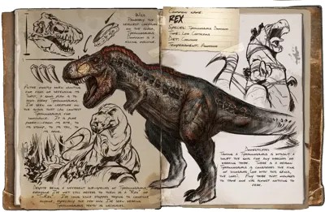
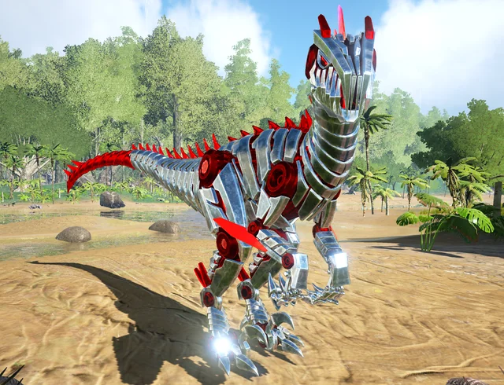

O Tiranossauro Rex: O Rei da Ilha
O Tiranossauro Rex é, sem dúvida, a criatura mais icônica de ARK. Para domá-lo, o sobrevivente precisa de estratégia e coragem. É extremamente importante utilizar dardos tranquilizantes de alta qualidade, pois sua resistência é lendária entre os exploradores.

Evolução Tecnológica: A Era Tek
Atingir o nível Tek representa o ápice da evolução. Com armaduras que permitem voo livre e rifles de plasma, o jogo deixa de ser apenas sobre sobrevivência primitiva e se torna uma batalha futurista. Note que o elemento é essencial para manter esse ecossistema funcionando.
